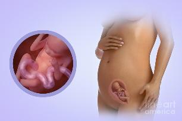

18 неделя беременности
Многие мамочки уже отчётливо ощущают шевеления малыша, что доставляет им особую радость. Живот на 18 неделе беременности растёт, его уже трудно не заметить, да и стоит ли скрывать эту самую высшую степень женской красоты?
Длина малыша: 14 см.
Вес малыша: 150 г.
Восемнадцатая неделя беременности – это почти половина пройденного пути. Ребенок продолжает расти и развиваться, а многие женщины впервые чувствуют его шевеления.
Обычно это время характеризуется стабильным состоянием, и у будущих мам не возникает каких-либо осложнений.
Малыш сейчас размером с огурец, и его вес увеличится примерно в шесть раз в течение следующего месяца.
В этот период у ребенка продолжается развитие головного мозга и органов чувств.
Глазное яблоко совершенствуется и сетчатка приобретает большую чувствительность, что позволяет ребенку реагировать на яркий свет.
Изменения происходят и в строении внутреннего уха малыша. Сформированные слуховые косточки становятся крепче и позволяют ребенку более отчетливо различать различные шумы и звуки.
Скелет становится крепче.
На 18 неделе завершают свое формирование пальцы рук и ног. Поэтому очень часто на УЗИ можно наблюдать, как ребенок сосет палец, трогает себя или пуповину. Также повышается общая активность малыша, которая проявляется в шевелении, смене положения, толчках или кувырканиях внутри матки.
С повышенной физической активностью у ребенка наблюдается учащенная деятельность сердца. Это означает, что ребенок становится еще активнее, и шевеления становятся все чаще.
Малыш сейчас практикуется во вдыхании околоплодной жидкости, и его грудь двигается ритмически, как при дыхании воздухом. Поскольку легкие ребенка еще не функционируют по назначению, кислород он получает от мамы. Полученная через пуповину от матери кровь, обогащенная кислородом, с правого желудочка поступает сразу в левое предсердие, а затем расходится ко всем остальным органам.
На 18 неделе и у девочек, и у мальчиков половые органы уже полностью сформированы и занимают свое окончательное место расположения.
Иммунная система малыша активно готовится к жизни вне утробы. Происходит выработка миелина (защитного слоя вокруг нервов). Ультразвуковое исследование, выполненное на данном сроке, способно выявить любые структурные аномалии.
Внутриутробное развитие плода на 18 неделе беременности
ВАШ ОРГАНИЗМ
У вас могут возникать моменты головокружения или обморочного состояния по причине увеличения объема кровотока в вашем организме.
Вы можете даже отмечать увеличенное слюноотделение, однако не у каждой женщины наблюдается этот симптом.
Может наблюдаться иссушение кожи и сыпь. Возможно появление на лице так называемой «маски беременной» в виде симметричных коричневых пятен на носу, щеках и лбу. Эти пятна обычно исчезают после родов.
Вы по-прежнему будете набирать вес.
Вас может посещать ощущения внезапного движения чуть ниже пупка, связанное с тем, что маленький размахивает ручонками и бьет ножками.
Увеличение объема матки создает дополнительную нагрузку на мышцы спины и позвоночник. Из-за этого возможны неприятные ощущения и боли в спине во время сна и при ходьбе. Чтобы облегчить дискомфорт необходимо делать массаж поясницы и больше отдыхать.
Зачастую рост ребенка приводит к давлению стенок матки на внутренние органы женщины. Кишечник, селезенка и печень меняют обычное положение и немного смещаются вверх. Особенно неприятным может оказаться изменение расположения желудка. Его перемена на горизонтальное положение нередко приводит к появлению изжоги. Усилить дискомфорт может и полный мочевой пузырь. Поэтому старайтесь не терпеть и чаще ходить в туалет.
УЗИ на 18 неделе беременности
ЗДОРОВЫЕ СОВЕТЫ
На 18 неделе, как и в любой период, стоит особое внимание уделять правильному набору веса. Нормой считается 11-15 кг за все время беременности. Поэтому женщине необходимо следить за рационом и физической активностью во избежание появления лишних килограммов.
Иногда может появляться насморк и заложенность носа. Они не всегда связаны с инфекцией и обычно после родов проходят сами по себе.
Для того, чтобы предотвратить его появление или облегчить симптомы, необходимо употреблять больше жидкости и регулярно в доме использовать увлажнители воздуха. Это поможет избежать пересыхания и раздражения слизистой носа.
Также вам необходимо привыкать спать на боку. Поскольку в последующие месяцы живот будет только расти, это поможет избежать болевых ощущений в спине и обеспечит нормальный отдых. Чтобы найти удобное положение для сна, можно воспользоваться подушкой, подкладывая ее под ноги.
Для облегчения головокружения и предупреждения обморочного состояния вставайте медленно из горизонтального положения и пейте достаточное количество воды.
Полезны в таких случая высокоэнергетические продукты, например, бананы.
При приступе головокружения присядьте, сделайте несколько глубоких вдохов и перекусите чем-нибудь.
Если вас беспокоят пучение живота и газы, налегайте на источники клетчатки, включая фрукты и овощи. Опасайтесь физической перегрузки и просите домочадцев помогать вам с домашними делами.
Полезные советы на 18 неделе беременности
Если у вас появились боли в пояснице, начните посещать бассейн (плавание укрепит мышцы спины) и занятия по лечебной физкультуре. При боли в области бедер, ягодиц сделайте несколько наклонов вперед и в стороны, повращайте тазом. Затем лягте на «здоровый» бок и расслабьтесь – через несколько минут боль должна пройти.
Начните выполнять упражнения для укрепления мышц промежности (упражнения Кегеля). Сядьте, сожмите мышцы промежности, напрягитесь, как будто удерживаете струю мочи. Держите мышцы напряжение в течение 10 секунд, а затем медленно расслабьтесь. Сначала выполняйте 5, затем 10 повторов 2-3 раза в день.
Если резко встав с кровати, вы чувствуете головокружение, соблюдайте следующие правила. После пробуждения не вставайте быстро, потянитесь, подвигайте руками и ногами. Затем сядьте и посидите несколько минут в постели. После этого можно встать, но делайте это не спеша.
17 неделя 19 неделя